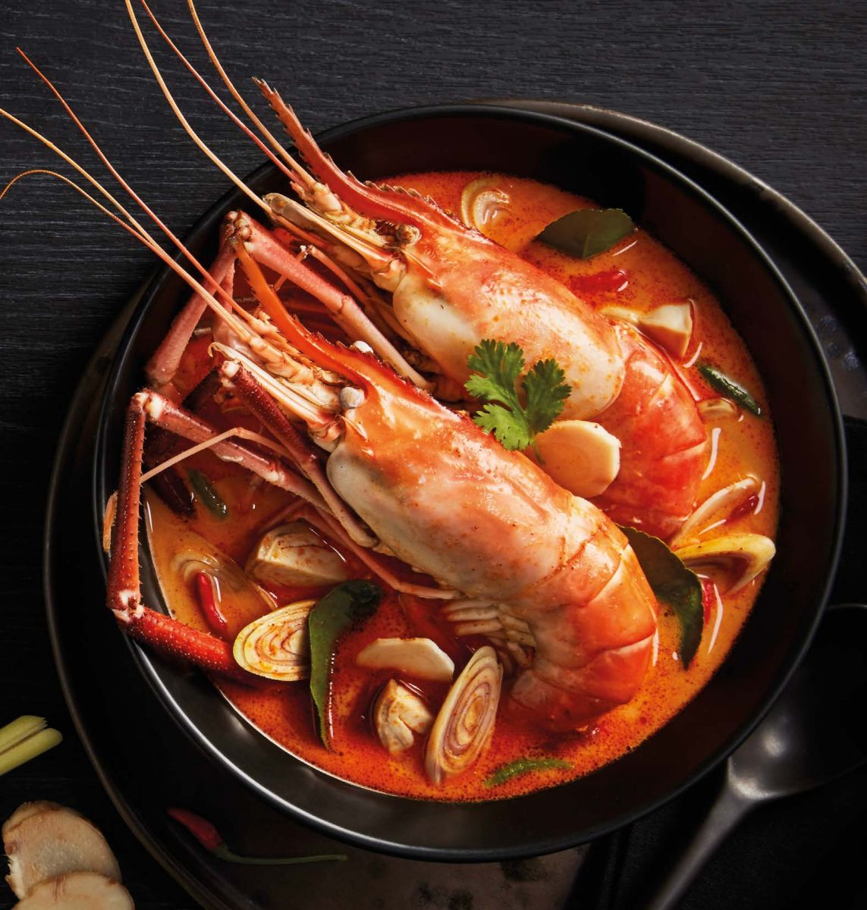
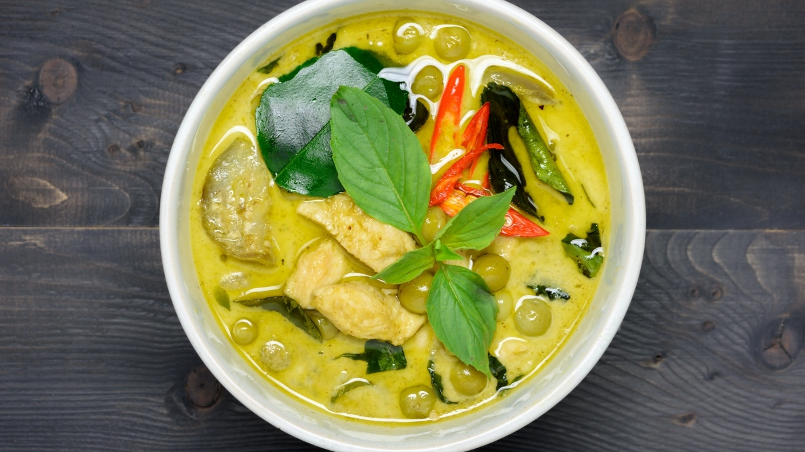
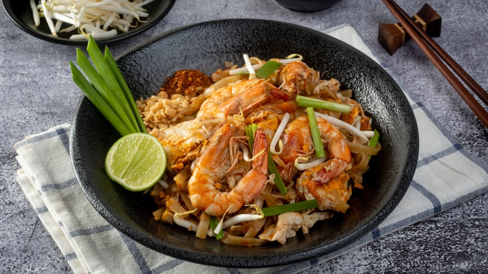

"อาหารภาคกลาง"
"ต้มยำกุ้ง"
“ต้มยำกุ้ง” ซุปสีจัดจ้าน ถ้วยที่เต็มไปด้วยสมุนไพรสดและกุ้งตัวโตๆ นี้
ไม่ใช่แค่悦อาหารยอดนิยมของคนไทย แต่เป็น “คิงออฟฟู้ด” (King of Thai Food)
ที่สร้างชื่อเสียงให้ประเทศไทยโด่งดังไปทั่วโลก จนคำว่า Tom Yum Goong
กลายเป็นคำทับศัพท์ที่คนทั่วโลกเข้าใจตรงกัน และเป็นตัวแทนความสมบูรณ์แบบของ "เสน่ห์รสชาติภาคกลาง" อย่างแท้จริง

"แกงเขียวหวาน"
“แกงเขียวหวาน” (Green Curry) เป็นอีกหนึ่งเมนูระดับท็อปที่ถ้าพูดถึงอาหารไทยภาคกลางเมื่อไหร่
ทุกคนต้องนึกถึงเป็นอันดับแรกๆ ด้วยสีสันที่ดูนุ่มนวลชวนมอง แต่ทว่าแฝงไปด้วยรสชาติที่เผ็ดร้อน
กลมกล่อม และหอมละมุนอย่างลุ่มลึก จนขึ้นแท่นเป็นหนึ่งในแกงกะทิที่ได้รับความนิยมที่สุดในโลก

"ผัดไทย"
“ผัดไทย” (Pad Thai) เป็นเมนูที่แค่ได้ยินชื่อก็รู้ทันทีว่าเป็นอาหารประจำชาติ
เส้นจันท์เหนียวนุ่ม ผัดคลุกเคล้ากับซอสรสชาติเปรี้ยว เค็ม หวาน และกลิ่นหอมกระทะอันเป็นเอกลักษณ์
ถือเป็นหนึ่งใน "ทูตวัฒนธรรม" ที่ประสบความสำเร็จที่สุดของไทย
เพราะไม่ว่าจะไปเยือนร้านอาหารไทยแห่งหนใดในโลก เมนูนี้จะต้องเป็นสเตชันหลักที่ขาดไม่ได้เสมอ
